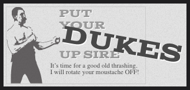

Descriptions
-
Week 8 Notes - This page illustrates the notes I took while studying this week's materials.
The notes also display photos from the reading with titled explanations. The goal was to make the
webpage resemble a Cornell Notes sheet of paper. That layout was achieved for both mobile and
desktop viewing.
-
(Photos from the notes are also included in this page.)
-
Team Activity - This project was designed to handle API requests through FETCH methods. Using
Promises or Async properties, we would use JSON to display external API data in a table.
-
Prev and Next buttons are provided for the user to scroll through all Star Wars
starships. As each new ship group is displayed, additional ship details are also provided for
the user to view.
This Week's Highlights
Star Wars API

Translate Example

SVG Exmaple